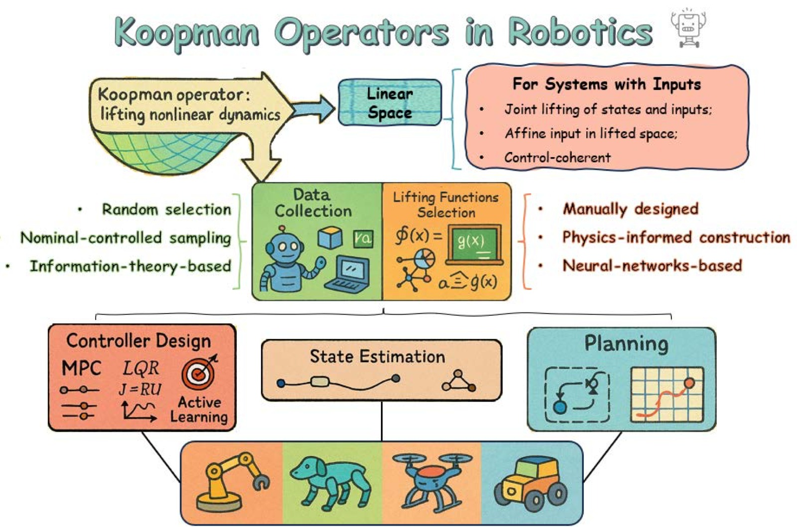

Koopman Operators in Robot Learning
论文信息 - 作者：Lu Shi, Masih Haseli, Giorgos Mamakoukas, Daniel Bruder, Ian Abraham, Todd Murphey, Jorge Cortés, Konstantinos Karydis - 通讯作者：Konstantinos Karydis (kkarydis@ece.ucr.edu) - 类型：综述论文 (Survey/Review) - arXiv ID：2408.04200v2 - 代码/Tutorial：https://shorturl.at/ouE59 - 发表状态：投稿中 (under review)
一、核心问题
机器人学面临一个根本性挑战：如何在未知、不可模拟的环境中实现运行时学习（runtime learning）？ 现有方法（深度强化学习、Neural ODE、生成式 AI）高度依赖离线大数据，但在真实部署中，机器人经常遇到：
- 新颖环境：先验数据集中未预见的物理现象
- 不可模拟的交互：人机交互、软体接触、湍流中的操作
- 未知参数与边界条件：触觉力学、可穿戴设备等场景
核心命题：如果机器人要在不依赖大量离线数据的情况下，在新环境中运行，有哪些工具适合使用"小数据"进行运行时学习？
Koopman 算子理论提供了一个部分答案：它将非线性系统全局线性化，从而使得线性控制理论能够直接应用于复杂的非线性机器人系统，且只需要稀疏数据。
二、Koopman 算子理论基础
2.1 核心数学概念
考虑离散时间非线性系统：
Koopman 算子 $\mathcal{K}$ 作用在可观测量（observables） $g$ 上——这些是从状态空间到复数的函数：
直观理解：$\mathcal{K} g(x_t) = g(T(x_t)) = g(x_{t+1})$，即可观测量在 lifted space 中线性演化。

图1：Koopman 算子理论的核心概念。在原始状态空间 $\mathcal{X}$ 中，非线性系统由未知映射 $T$ 控制：$x_t \to x_{t+1}$。通过可观测函数 $g(x)$ 将状态"提升"到高维 Koopman 空间后，系统的演化变为线性，由 Koopman 算子 $\mathcal{K}$ 控制。图中展示了两种到达 $g(x_{t+1})$ 的路径：底部路径是先通过 $T$ 演化再观察，顶部路径是先观察再通过 $\mathcal{K}$ 线性演化——两者结果一致。这个"等价性"带来了三大优势：(1) 非线性动力学的全局线性表示，可直接应用线性系统工具；(2) 可实时估计线性算子，无需大量数据做非线性回归；(3) 线性结构使得 LQR、MPC 等经典控制器可直接使用。
2.2 有限维近似
实践中需要有限维近似。若 $\mathcal{S} \subset \mathcal{F}$ 是 Koopman 不变的有限维子空间，选取向量值基函数 $\mathbf{\Psi}$，存在矩阵 $K$ 使得：
进而得到线性演化：$\mathbf{\Psi}(x_{t+1}) = K \mathbf{\Psi}(x_t)$
定义 $z_t := \mathbf{\Psi}(x_t)$ 即得标准线性形式：$z_{t+1} = K z_t$
2.3 EDMD：扩展动态模式分解
EDMD 是最广泛使用的 Koopman 算子估计算法。给定数据矩阵 $X = [x_1, \ldots, x_M]$ 和 $Y = [y_1, \ldots, y_M]$（其中 $y_i = T(x_i)$），求解最小二乘问题：
闭式解：$K_{\text{EDMD}} = \mathbf{\Psi}(Y)\mathbf{\Psi}(X)^\dagger$
关键洞察：EDMD 矩阵 $K_{\text{EDMD}}$ 捕获的是投影算子 $\mathcal{P}_{\text{Span}(\mathbf{\Psi})}\mathcal{K}$，而非 Koopman 算子本身。预测精度取决于 $\text{Span}(\mathbf{\Psi})$ 与 Koopman 不变子空间的接近程度。
2.4 HVOK：Hankel 视角的 Koopman
HVOK（Hankel View of Koopman）不显式选择基函数，而是利用时间延迟嵌入构造 Hankel 矩阵：
然后求解 $H_Y \approx K_{\text{HVOK}} H_X$。HVOK 在软体机器人等具有丰富时序动力学的系统中表现突出。
2.5 处理控制输入
原始 Koopman 理论针对自治系统，机器人却是受控系统。论文总结了三种扩展方法：
| 方法 | 核心思想 | 适用场景 |
|---|---|---|
| 联合提升 | 将 $u$ 视为扩展状态的一部分，定义 $g(x,u)$ | 结构化/重复性输入模式 |
| 仿射输入形式 | $g(x_{t+1}) \approx K g(x_t) + B u_t$ | LQR/MPC 控制设计，最常用 |
| Control-Coherent | 寻找嵌入空间使演化算子在控制变化时保持一致 | 操作任务、欠驱动系统 |
三、Koopman 建模与应用 Pipeline

图2：Koopman 算子理论在机器人学中的整体框架。该图由三个层级组成：最底层是机器人平台（操作臂、地面机器人、腿式机器人、软体机器人、飞行器、水下机器人、多智能体系统），中层是 Koopman 方法的核心组件（数据收集、提升函数设计/学习、算子估计、系统分析与分解），顶层是下游应用（建模、控制器设计、状态估计、运动规划）。这个框架展示了 Koopman 方法如何为各类机器人提供统一的非线性→线性转换范式。
典型的 Koopman 应用流程分三步：
- 数据收集：从机器人-环境交互中收集代表性数据
- 提升函数构建：设计/学习合适的 $\mathbf{\Psi}$ 映射
- 下游应用：控制器设计、状态估计、运动规划
3.1 数据收集策略
| 策略 | 方法 | 优缺点 |
|---|---|---|
| 随机采样 | 随机初始条件与输入 | 简单，但可能有安全隐患 |
| 基线控制器迭代 | 用上轮控制器生成下轮数据 | 更安全，逐步改进 |
| 主动学习 | 优化 Fisher 信息矩阵 | 数据效率高，支持实时学习 |
3.2 提升函数选择的三种路径
- 手工设计基函数：Hermite 多项式、RBF 等，依赖领域知识，劳动密集
- 物理信息引导：利用运动学约束、几何结构等先验知识，兼具可解释性和鲁棒性
- 神经网络学习：Deep Koopman/Autoencoder-Koopman 框架，灵活但可解释性差
选择原则：操作臂/腿式机器人倾向 NN（复杂度高）；轮式机器人倾向手工设计（动力学已知）；飞行器/软体机器人三者皆有探索，HVOK 因能捕获环境扰动而受青睐。
3.3 Koopman 控制器设计
Koopman MPC
利用线性 Koopman 模型，MPC 优化转化为凸二次规划：
线性模型实现使问题变凸，有唯一全局最优解，可高效求解，适合实时反馈控制。
主动学习
利用线性最小二乘的闭式解，可构造可微分的 Fisher 信息矩阵：
通过优化 D-optimality 或 T-optimality 等标量准则，控制器在完成任务的同时主动探索以降低模型不确定性——这在飞行器从失控翻滚中恢复、腿式机器人在颗粒介质中学习交互模型中得到了验证。
3.4 状态估计与运动规划
- 状态估计：Koopman Kalman 滤波器、EVOLVER 扰动观测器、KoopSE 批量估计
- 运动规划：将 SLAM 问题重构为双线性形式、基于 Koopman 对偶算子的凸导航规划、不确定性感知规划器
四、各类机器人平台上的实现
论文提供了一张全面的文献综述表，覆盖操作臂、轮式/腿式机器人、软体机器人、飞行器、水下机器人等领域的代表性工作。
4.1 操作臂
- 建模与预测控制：结构化 deep Koopman 模型 + Lipschitz 约束 + MPC
- 模仿学习：Koopman 提升将人类演示编码为意图模型，大幅减少所需标注数据
- 灵巧手操作：Koopman 联合建模手和物体的耦合动力学
4.2 地面机器人
- 轮式：Koopman MPC 用于复杂地形导航；虚拟控制输入处理旋转动力学
- 腿式：Koopman 捕获混合动力学（接触切换），实现跨步态预测；增量学习应对分布偏移
- 自动驾驶：Koopman 估计车辆模型 + MPC；双线性模型 + DNN 扩展
4.3 软体机器人（最活跃的应用领域）
软体机器人的物理安全性使其成为 Koopman 方法的理想试验平台：
- 多项式基函数、时间延迟嵌入、NN 三种提升方式均有成功案例
- MPC 和 LQR 是最常用的控制策略
- 新趋势：用 Koopman 模型作为 RL 的替代环境加速策略学习
4.4 飞行器
- Episodic learning 实时估计 Koopman 特征函数以处理地面效应
- 层级结构：外层 Koopman 控制器修正参考信号，内层为预调底层控制器
- KoopNet：NN + Koopman 联合学习提升函数和双线性模型
五、鲁棒性与稳定性
Koopman 模型在实际应用中面临噪声、数据稀疏、有限维近似误差等挑战。研究从以下层面应对：
| 层面 | 策略 |
|---|---|
| 数据 | 推导 DMD/EDMD 在噪声下的预测误差界 |
| 模型 | Kalman 滤波增强模型、深度随机 Koopman 算子、最近稳定矩阵 |
| 控制 | 约束紧缩 MPC（保证递推可行性）、Conformant Koopman 模型、Lipschitz 误差界 + 鲁棒 MPC |
六、高级理论专题
6.1 连续时间
对于 $\dot{x} = G(x)$，Koopman 半群 $\{\mathcal{K}^t\}_{t \geq 0}$ 定义为 $\mathcal{K}^t f = f \circ \Phi_G^t$。其无穷小生成元 $\mathcal{L}_G$ 为：
6.2 输入系统的严格处理
两种严格的算子理论方法：
- Acting on extended state-input space：将 $(x,u)$ 视为联合状态
- Input-state separable form：$g(T(x,u), u^+) = K' g(x,u)$ 的推广形式
6.3 有界不确定性下的预测
NREDMD（Noise-Robust EDMD）和 T-SSD 等方法为噪声环境下的 Koopman 估计提供了理论保障。
七、开放挑战
论文给出了七大未来研究方向：
- 约束纳入 Koopman 空间：如何将原始空间中的各类约束恰当地提升到 Koopman 空间
- 随机仿真与信念空间规划：处理多模态分布，在不确定性下生成鲁棒计划
- 采样率选择：采样率直接影响 Koopman 算子质量和预测误差界
- 精细/灵巧操作：接触动力学产生的非连续性可通过 Koopman 线性表示处理
- 软体机器人进一步扩展：高维提升的计算成本与降维近似的精度权衡
- 混合系统扩展：如何统一处理连续流与离散跳跃的动力学
- 提升特征中的不确定性：Gaussian 假设在提升空间中是否仍然成立？
八、关键洞察
Koopman 方法的核心优势：可解释性（原理几何/代数基础）、数据效率（仅需稀疏数据）、线性表示（可直接使用 LQR/MPC 等工具）
EDMD 的本质：不是逼近 Koopman 算子本身，而是逼近投影算子 $\mathcal{P}_{\text{Span}(\mathbf{\Psi})}\mathcal{K}$，精度取决于字典与不变子空间的接近程度
仿射输入形式 $g(x_{t+1}) \approx Kg(x_t) + Bu_t$ 是最实用的方法，与 LQR/MPC 天然兼容
软体机器人是 Koopman 方法最有前景的应用领域——物理安全性允许大量数据收集，非线性强且难以第一性原理建模
主动学习是 Koopman 的独特优势——Fisher 信息矩阵的闭式解使探索具有理论指导，这是深度学习方法不具备的
九、关键概念速查
| 概念 | 含义 |
|---|---|
| Koopman 算子 $\mathcal{K}$ | 作用在可观测量上的无穷维线性算子：$\mathcal{K}g = g \circ T$ |
| 可观测量 (Observable) | 从状态空间到复数的函数 $g: \mathcal{X} \to \mathbb{C}$ |
| 提升函数 (Lifting Function) | 将原始状态映射到高维空间的函数 $\mathbf{\Psi}(x)$ |
| EDMD | Extended DMD：从数据最小二乘估计 Koopman 矩阵 |
| HVOK | Hankel View of Koopman：用时间延迟嵌入替代显式基函数 |
| Koopman MPC | 基于 Koopman 线性模型的凸 MPC 框架 |
| Koopman 特征函数 | 满足 $\mathcal{K}\phi = \lambda\phi$ 的函数，演化遵循线性差分方程 |
| Fisher 信息主动学习 | 利用 Fisher 矩阵闭式解优化探索策略 |
| Control-Coherent | 保持 Koopman 嵌入在控制变化下的一致性 |